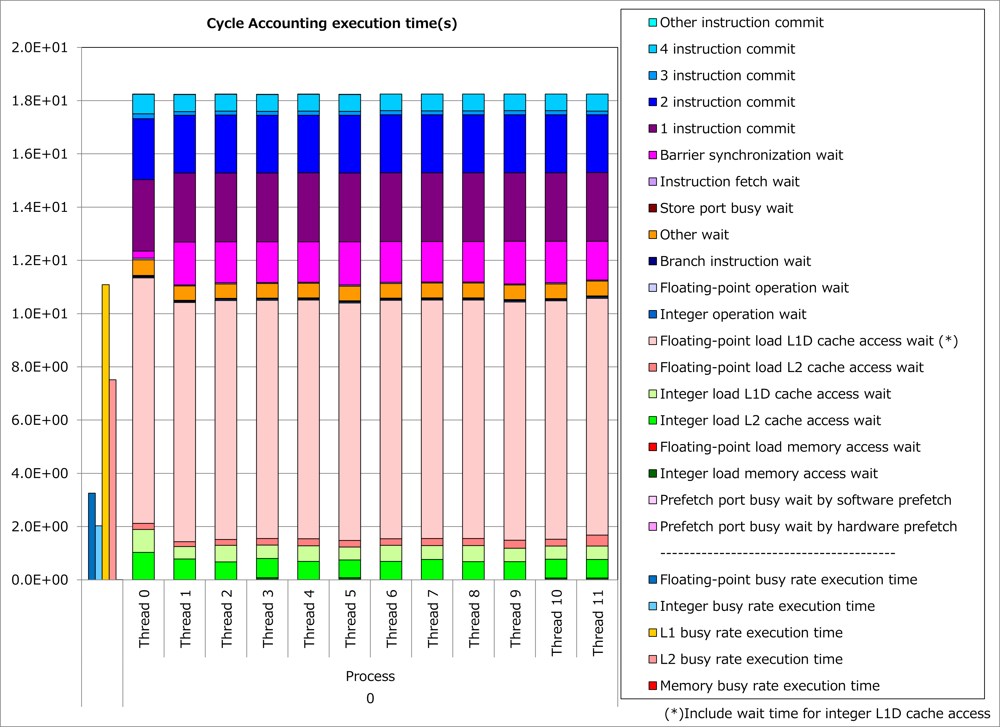
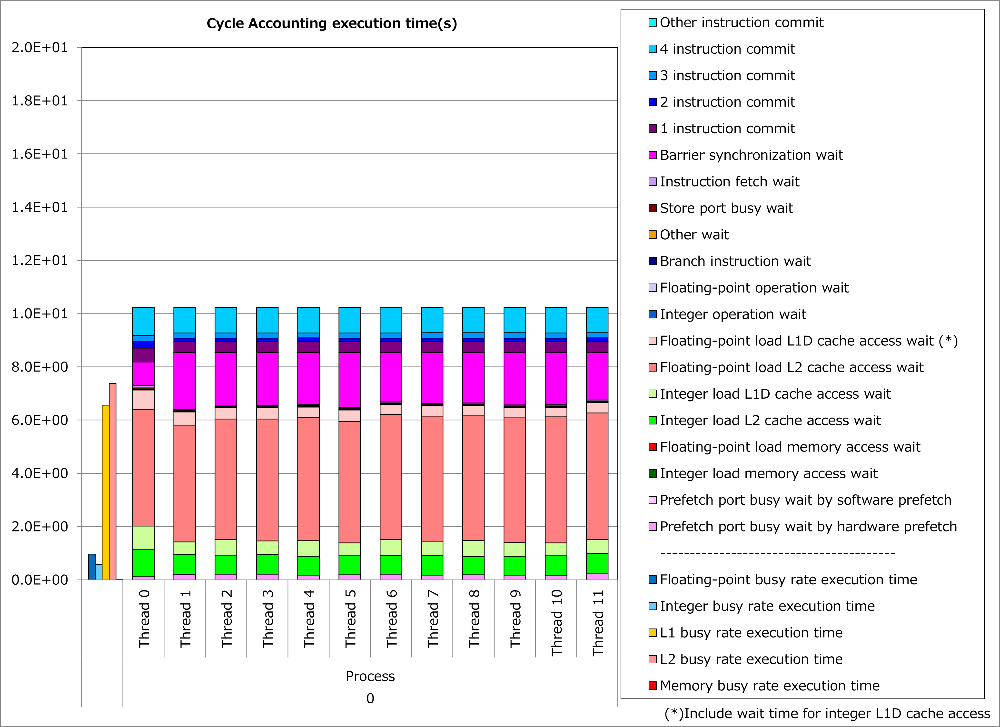

4.3. 配列ポインタへのcontiguous属性追加¶
4.3.1. 動機¶
Fortran言語において、contiguous属性を指定した配列ポインタは、contiguousである指示先とのみポインタ結合することができます。 そのため、配列ポインタにcontiguous属性が指定された場合、ポインタ結合先が連続領域であることを前提として、富士通Fortranコンパイラは配列アクセスのオブジェクトコードを最適化します。
すなわち、配列ポインタにcontiguous属性を指定できる場合、配列アクセスが明示的に連続となり、 プロセッサのキャッシュアクセス負荷が軽減 されて、実行時間を短縮できる可能性があります。
4.3.2. 適用例¶
STREAMベンチマーク にもとづくコード例を用いて、性能改善の例を以下に示します。 この例では、割付け配列と結合する配列ポインタpa、pbおよびpcに対して、contiguous属性を付与しています。
改善前¶
TYPE dtype
REAL(KIND=8), DIMENSION(:), ALLOCATABLE :: a, b, c
END TYPE dtype
TYPE(dtype), TARGET :: dtarg
REAL(KIND=8), DIMENSION(:), POINTER :: pa, pb, pc
pa => dtarg%a
pb => dtarg%b
pc => dtarg%c
!$OMP PARALLEL DO
!OCL NORECURRENCE
DO i = 1, n
pa(i) = pb(i) + scalar * pc(i)
END DO
改善後¶
TYPE(dtype), TARGET :: dtarg
REAL(KIND=8), DIMENSION(:), POINTER, CONTIGUOUS :: pa, pb, pc
pa => dtarg%a
pb => dtarg%b
pc => dtarg%c
!$OMP PARALLEL DO
!OCL NORECURRENCE
DO i = 1, n
pa(i) = pb(i) + scalar * pc(i)
END DO
改善前および改善後コードのサイクルアカウンティング測定結果を下記グラフに示します。 なお性能測定条件は、L2キャッシュでのブロッキングを想定し以下としました。
n = 196608
改善前(左のグラフ)に対して改善後(右のグラフ)の測定結果では、L1Dキャッシュビジー時間が半減し、L2キャッシュアクセス待ち時間が支配的になり、実行時間が44%減ったことが分かります。
 {kind=link}
{kind=link}
4.3.3. 実例¶
A64FX向けチューニング技術検討会 にて、この種の事例が以下のとおり紹介されています。
4.3.4. 参考資料¶
注意: 上記ドキュメントの参照には スーパーコンピュータ「富岳」利用者ポータル のアクセス権が必要です。